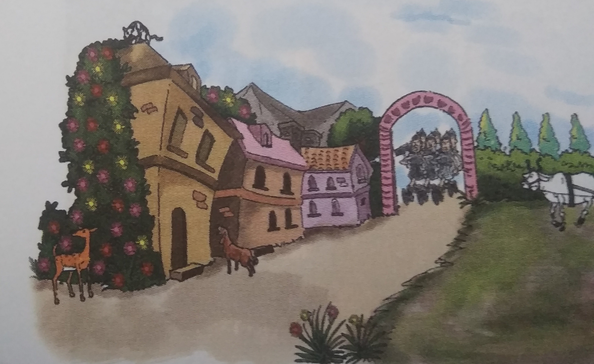
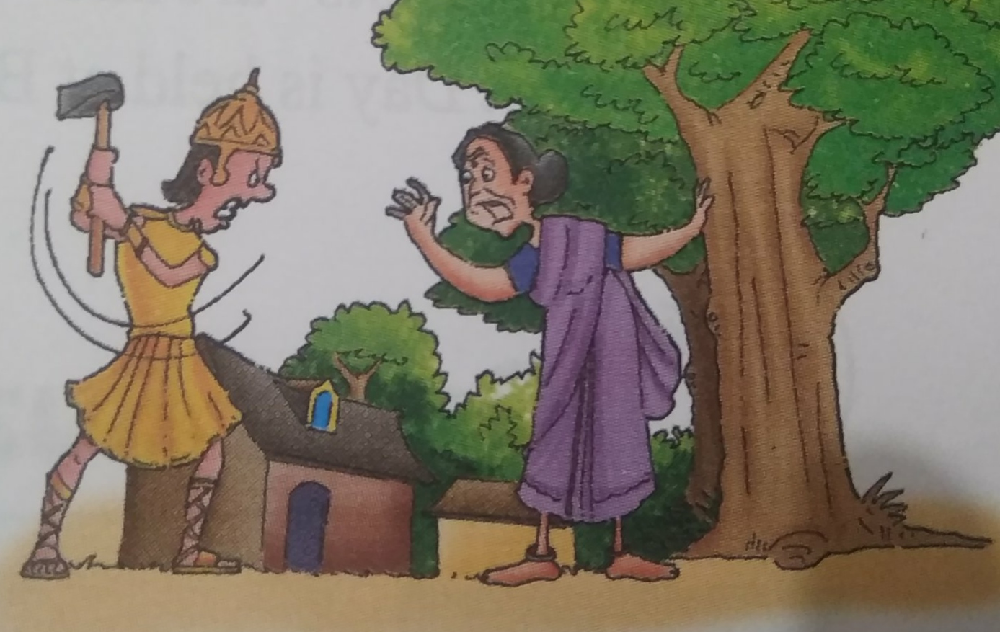

MAGNETstudy
ENGLISH STORIES
For the love of trees
It was about two hundred years ago when Maharaja Abhay Singh of Jodhpur required some
wood for the construction of his new palace. His soldiers were sent to cut trees in the nearby
region of Khejarli, where the village was abounded with trees When these soldiers set foot in
the village, they were quite surprised to see that the Khejarli village was easily
distinguishable with plenty of trees and other vegetation, and herds of antelopes were
roaming freely near the homes of villagers. The fields were ploughed with simple ploughs
using bullocks or camels, and the soldiers understood that this was done to cause minimal
damage to the fragile desert ecosystem. They also noticed that the Bishnois kept only cows
and buffaloes, as the rearing of sheep and goats would devour the desert vegetation. The
villagers did not sell dairy products, and did not raise sheep or goats for slaughter. Their
dogs were trained not to kill the wild animals, especially the black bucks Cats were well taken
care of and were trained to kill snakes and rats that ate their grain. They fed the cats with
curd and milk. Astonished, one of the soldiers pointed towards what looked like groves. On
enquiring about those groves, a villager told the soldiers that the groves, locally known as
Orans were maintained for the animals to graze and birds to feed. He said, 'Every single
drop of water is precious and the Organs serve as important rechargers of rainwater in the
aquifers in the desert By noon, the soldiers had toured the small village with a big heart!. All
of them were wonderstruck but more than that, they feared of losing their jobs. It was time
for them to get to work As soon as they started to cut the first tree, a voice came, "Stop!
Please don't cut the tree. It was Amrita Devi, a villager. She stood in front of the tree and said
courageously, 'Before killing this tree, you'll have to kill me. Are you going to give your life
for this tree?" mocked one of the soldiers. "Yes, I will because I love this tree as I love my
family, came the prompt reply Another soldier tried to convince Amrita Devi that cutting a
few trees wouldn't harm anyone. He explained to her that it was the king's order to cut the
trees and it was useless giving her life for the tree. They told her that if she wanted the trees
to be spared, she would have to give them money as bribe. She refused to acknowledge this
demand and told them that she would consider it an act of insult to her religious faith and
would rather give away her life to save the green trees. Amrita Devi didn't budge; she
embraced the tree and said, 'Sar santey rookh rahe to bhi sasto jaan.' (If a tree is saved even
at the cost of one's head, it's worth it.) The furious soldier struck the axe and the tree lover
died in a split second. Amrita Devi's three daughters, who had accompanied her also met the
same fate. The news spread like wild fire. Soon, young and old Bishnois who opposed theking's men were sacrificing themselves in a similar manner In all, 363 Bishnois weremartyred The news reached the cars of the king He went to see the people of the village. He
said that he regretted what had happened and promised the villagers to give gold coins as
compensation. But the people refused and said, 'Your Highness! If you want to give us
something, then please ban cutting of trees and hunting of animals. The king accepted their
wish. After that day, the people in the village lived happily but they also remembered their
martyrs who gave up their lives for the trees. World Environment Day is celebrated every
year on 5 June by the Bishnois and other environmentalists around the world. The major
event commemorating the World Environment Day is held at Bishnoi Bhawan, Delhi, by the
Bishnoi Community